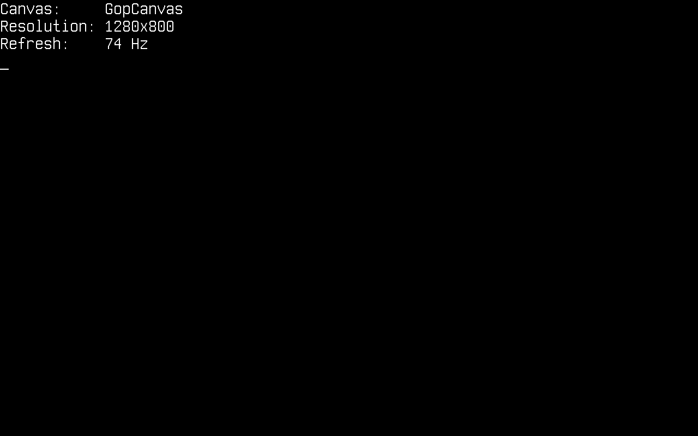
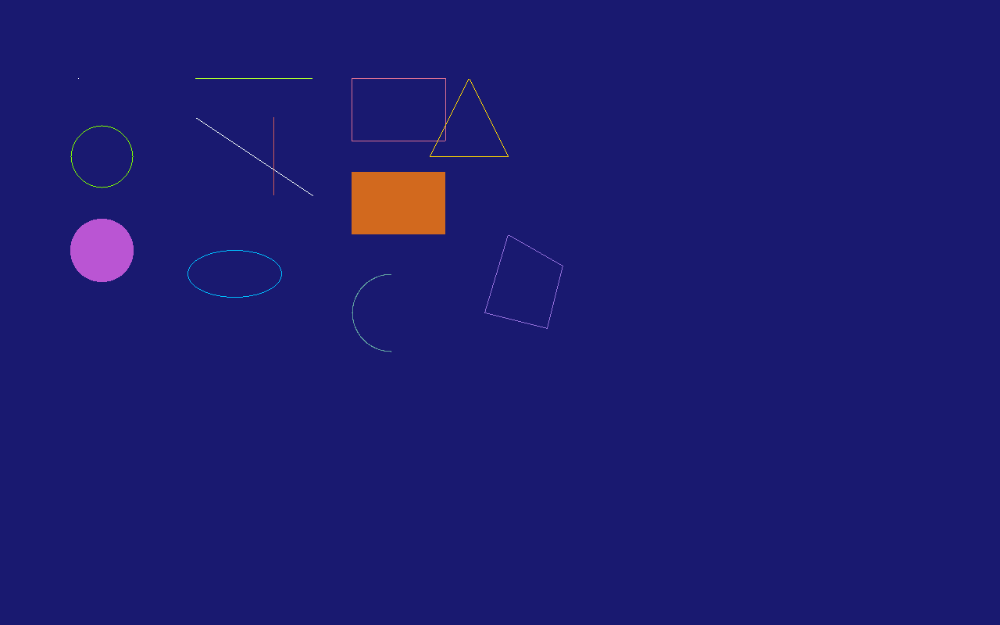
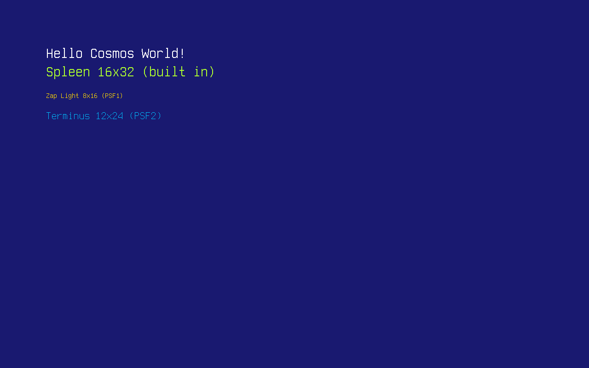
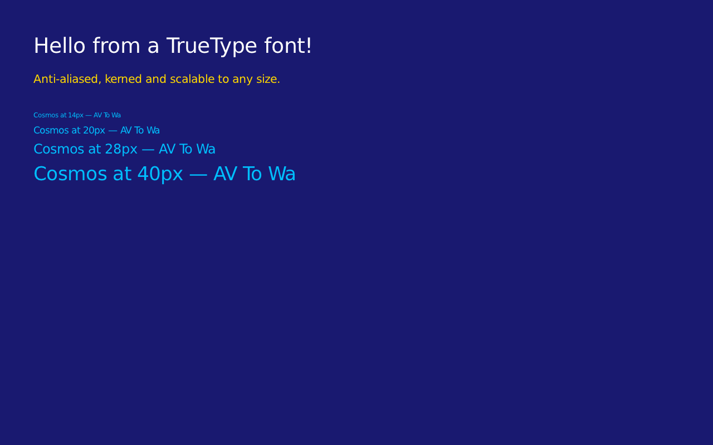
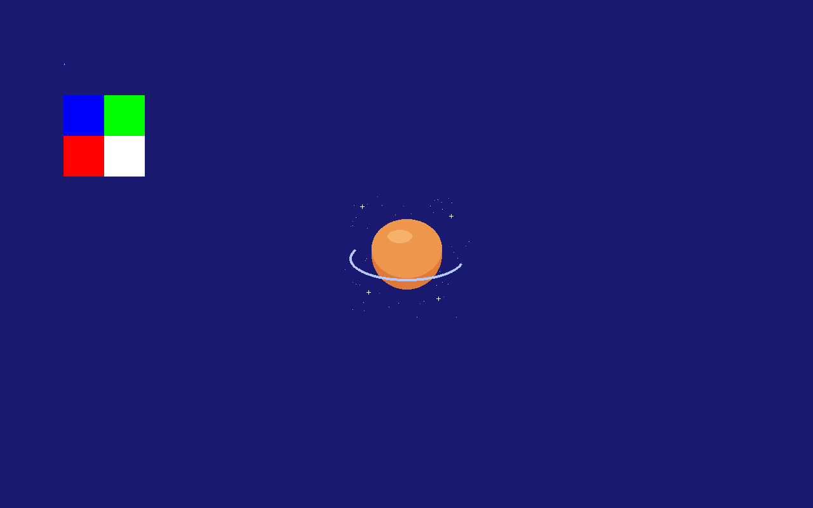
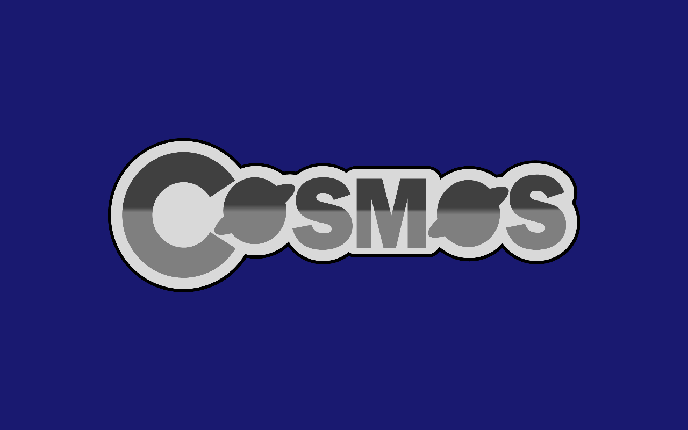
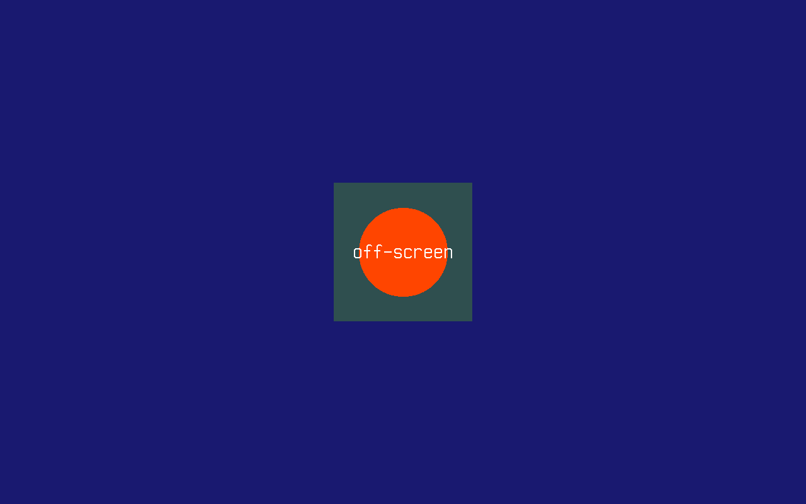

Graphics
In this article, we will discuss the Cosmos Graphics Subsystem (CGS) on Cosmos Gen3: how to get a drawing surface and put shapes, text and images on the screen. CGS is based on the abstraction of a Canvas — an empty space you draw on. It is a drawing layer, not a widget toolkit: there are no windows or buttons, but everything you need to build them.
The main differences if you come from Gen2:
| Gen2 | Gen3 | |
|---|---|---|
| Canvas API | Cosmos.System.Graphics |
Same API, in Cosmos.Kernel.System.Graphics |
| Video drivers | VBE, VGA, VMWare SVGA II | Limine-provided framebuffer (x64 and ARM64) |
Display() |
Required on double-buffered drivers | Always required — the canvas is double-buffered |
| Video mode | Switchable at runtime | Fixed at boot by the bootloader |
| Text console | Separate VGA text mode | Rendered on the same canvas |
| Colors | System.Drawing.Color |
System.Drawing.Color |
If you find bugs or something abnormal, please submit an issue on our repository.
Enable graphics in your kernel
Graphics support is behind a feature switch. Make sure your kernel's .csproj does not turn it off (it defaults to true):
<PropertyGroup>
<CosmosEnableGraphics>true</CosmosEnableGraphics>
</PropertyGroup>
These are the usings the snippets below rely on:
using System.Drawing;
using System.IO;
using Cosmos.Kernel.System.Graphics;
using Cosmos.Kernel.System.Graphics.Fonts;
Getting a canvas
Canvas.GetFullScreen() returns the canvas backed by the screen — the framebuffer the bootloader set up at boot:
Canvas canvas = Canvas.GetFullScreen();
Console.WriteLine("Canvas: " + canvas.Name());
Console.WriteLine("Resolution: " + canvas.Width + "x" + canvas.Height);
Console.WriteLine("Refresh: " + canvas.RefreshRate + " Hz");

Two things to know before you start drawing:
- The resolution is fixed at boot. Unlike Gen2, requesting a different
Modedoes not reprogram the video card — the canvas always has the resolution the bootloader chose. Usecanvas.Widthandcanvas.Heightinstead of assuming one. - Nothing appears until you call
Display(). The canvas is double-buffered: every drawing call goes to a back buffer, andDisplay()swaps the finished frame to video memory. Draw the whole frame, then callDisplay()once — that is also what keeps animations flicker-free. Consoleshares the screen with you. There is no separate text mode:Console.WriteLineis itself rendered on the full-screen canvas (and callsDisplay()on every write). Once you start drawing, stop writing toConsole— the next write would paint text right over your graphics. This also means an uncaught exception prints over whatever you drew, which — unlike Gen2, where the screen just froze — at least tells you what went wrong.
Drawing shapes
The canvas offers the classic set of primitives — points, lines, rectangles, circles, ellipses, arcs, triangles and polygons, most in outlined and filled variants:
Canvas canvas = Canvas.GetFullScreen();
canvas.Clear(Color.MidnightBlue);
/* A single point */
canvas.DrawPoint(Color.White, 100, 100);
/* Lines: horizontal, vertical and diagonal */
canvas.DrawLine(Color.GreenYellow, 250, 100, 400, 100);
canvas.DrawLine(Color.IndianRed, 350, 150, 350, 250);
canvas.DrawLine(Color.MintCream, 250, 150, 400, 250);
/* Outlined and filled rectangles */
canvas.DrawRectangle(Color.PaleVioletRed, 450, 100, 120, 80);
canvas.DrawFilledRectangle(Color.Chocolate, 450, 220, 120, 80);
/* Circles and ellipses */
canvas.DrawCircle(Color.Chartreuse, 130, 200, 40);
canvas.DrawFilledCircle(Color.MediumOrchid, 130, 320, 40);
canvas.DrawEllipse(Color.DeepSkyBlue, 300, 350, 60, 30);
/* An arc — angles are in degrees */
canvas.DrawArc(500, 400, 50, 50, Color.CadetBlue, 90, 270);
/* Triangles and polygons */
canvas.DrawTriangle(Color.Gold, 600, 100, 650, 200, 550, 200);
canvas.DrawPolygon(Color.MediumPurple,
new Point(650, 300), new Point(720, 340), new Point(700, 420), new Point(620, 400));
/* Swap the finished frame to the screen */
canvas.Display();

Colors are plain System.Drawing.Color values, so the full named palette (Color.MidnightBlue, Color.Chartreuse, ...) and Color.FromArgb(...) are available. Colors with an alpha channel below 255 are blended with the pixel already on the canvas.
Drawing text
Text rendering uses PSF (PC Screen Font) bitmap fonts — the format the Linux console uses, in both its PSF1 and PSF2 versions. A 16x32 Spleen font is built in as PCScreenFont.DefaultFont, and PCScreenFont.LoadFont(byte[]) loads any other PSF font at runtime.
There are plenty of ready-made PSF fonts to download:
- The Zap Group's console fonts — classic 8x16 PSF1 fonts (
zap-light16.psf,zap-vga16.psf). - Terminus — PSF2 in many sizes; most Linux distributions already ship it under
/usr/share/consolefonts/as.psf.gzfiles (decompress withgunzipfirst, the kernel reads plain.psf). - Spleen — PSF2 releases from 5x8 up to 32x64.
A font is just a file, so the easiest way to ship one is on the FAT disk from the File System article. Here zap16.psf is Zap Light (PSF1) and term24.psf is Terminus 12x24 (PSF2), copied onto the disk under FAT-friendly names:
Canvas canvas = Canvas.GetFullScreen();
canvas.Clear(Color.MidnightBlue);
/* The built-in 16x32 font */
Font font = PCScreenFont.DefaultFont;
canvas.DrawString("Hello Cosmos World!", font, Color.White, 100, 100);
canvas.DrawString("Spleen " + font.Width + "x" + font.Height + " (built in)",
font, Color.GreenYellow, 100, 140);
/* Load a PSF1 font from the mounted disk... */
Font zap = PCScreenFont.LoadFont(File.ReadAllBytes("/mnt/zap16.psf"));
canvas.DrawString("Zap Light " + zap.Width + "x" + zap.Height + " (PSF1)",
zap, Color.Gold, 100, 200);
/* ...and a PSF2 font */
Font terminus = PCScreenFont.LoadFont(File.ReadAllBytes("/mnt/term24.psf"));
canvas.DrawString("Terminus " + terminus.Width + "x" + terminus.Height + " (PSF2)",
terminus, Color.DeepSkyBlue, 100, 240);
canvas.Display();

TrueType fonts
PSF fonts are bitmaps: one size, one cell, no curves. For real typography the TrueTypeFont class loads a .ttf file and rasterizes it at any pixel size, with anti-aliased edges, per-glyph widths and pair kerning. The parser and rasterizer are pure managed code (see the Credits page), so a malformed font file throws an exception instead of corrupting memory.
TrueTypeFont derives from Font, so it goes wherever a bitmap font goes — passed to the plain DrawString overload it draws at its SizePx (set in the constructor, 16 by default). The dedicated overload takes the size explicitly, and each (character, size) pair is rasterized once and cached, so drawing the same text again is cheap:
Canvas canvas = Canvas.GetFullScreen();
canvas.Clear(Color.MidnightBlue);
/* Load a TrueType font from the mounted disk */
TrueTypeFont dejavu = new TrueTypeFont("/mnt/font.ttf");
canvas.DrawString("Hello from a TrueType font!", dejavu, 44, Color.White, 60, 60);
canvas.DrawString("Anti-aliased, kerned and scalable to any size.", dejavu, 24, Color.Gold, 60, 130);
/* One font file, any size */
int y = 200;
foreach (int size in new[] { 14, 20, 28, 40 })
{
canvas.DrawString("Cosmos at " + size + "px — AV To Wa", dejavu, size, Color.DeepSkyBlue, 60, y);
y += dejavu.GetLineHeight(size) + 10;
}
canvas.Display();

The (x, y) you pass is the top-left of the text line, like the PSF overload. For layout, MeasureString(text, size) returns the width a string will occupy, GetLineHeight(size) the distance between the tops of two lines, and GetLineMetrics(size, out ascent, out descent, out lineGap) the underlying baseline metrics. Kerning comes from the font's legacy kern table; fonts that only ship GPOS kerning still render, just without pair adjustments.
Drawing images
Images are represented by the Bitmap class. You can build one in code from raw pixel data — each pixel is four bytes in B, G, R, A order:
Canvas canvas = Canvas.GetFullScreen();
canvas.Clear(Color.MidnightBlue);
/* A 2x2 bitmap: blue, green, red and white pixels (B G R A byte order) */
Bitmap bitmap = new Bitmap(2, 2, new byte[]
{
255, 0, 0, 255, // blue
0, 255, 0, 255, // green
0, 0, 255, 255, // red
255, 255, 255, 255, // white
}, ColorDepth.ColorDepth32);
/* Draw it pixel-for-pixel, then scaled up to 128x128 */
canvas.DrawImage(bitmap, 100, 100);
canvas.DrawImage(bitmap, 100, 150, 128, 128);
canvas.Display();
More usefully, Bitmap can load an uncompressed 24-bit or 32-bit BMP file through standard System.IO — for example from a FAT disk mounted as shown in the File System article:
/* logo.bmp is a 24-bit BMP on the FAT partition mounted at /mnt */
Bitmap logo = new Bitmap(@"/mnt/logo.bmp");
canvas.DrawImage(logo,
(canvas.Width - (int)logo.Width) / 2,
(canvas.Height - (int)logo.Height) / 2);
canvas.Display();

PNG files work the same way through the Png class — also an Image, so it goes wherever a Bitmap goes. The whole format is supported (grayscale, truecolor and palette, with or without alpha, interlaced or not), decoded by pure managed code (see the Credits page). Transparent pixels blend with what is already on the canvas:
/* logo.png is a PNG with transparency on the FAT partition mounted at /mnt */
Png logo = new Png("/mnt/logo.png");
/* Draw it scaled to half size, centered — transparent pixels blend with the background */
int width = (int)logo.Width / 2;
int height = (int)logo.Height / 2;
canvas.DrawImage(logo, (canvas.Width - width) / 2, (canvas.Height - height) / 2, width, height);
canvas.Display();

DrawImageAlpha draws with per-pixel alpha blending, and canvas.GetImage(x, y, width, height) does the reverse — it copies a region of the canvas back into a Bitmap.
Off-screen canvases
A Canvas does not have to be the screen. Constructing one with a size gives you a memory-backed canvas with the exact same drawing API — compose a tile or sprite once, then blit it to the screen with DrawCanvas as many times as you like:
Canvas canvas = Canvas.GetFullScreen();
canvas.Clear(Color.MidnightBlue);
/* Compose off-screen... */
Canvas tile = new Canvas(220, 220);
tile.Clear(Color.DarkSlateGray);
tile.DrawFilledCircle(Color.OrangeRed, 110, 110, 70);
tile.DrawString("off-screen", PCScreenFont.DefaultFont, Color.White, 30, 94);
/* ...then blit it to the screen wherever it is needed */
canvas.DrawCanvas(tile, (canvas.Width - 220) / 2, (canvas.Height - 220) / 2);
canvas.Display();

Reading pixels back
GetPointColor returns the color of a pixel already on the canvas:
canvas.DrawPoint(Color.Red, 69, 69);
Color color = canvas.GetPointColor(69, 69); // Color.Red
Current limitations
- Only 32-bit color depth is supported end to end; BMP loading additionally accepts 24-bit files.
- The video mode cannot be changed at runtime — the framebuffer resolution is whatever the bootloader negotiated at boot.
- Supported image formats are BMP (uncompressed, 24 or 32 bpp) and PNG; there is no JPEG support.
- No hardware acceleration: every primitive is drawn pixel by pixel by the CPU.
FullScreenCanvas.Disable()exists but there is no VGA text mode to fall back to on UEFI machines.
How it works
Canvas.GetFullScreen() returns a GopCanvas, a canvas backed by the framebuffer that the Limine bootloader requests from the firmware (UEFI GOP) before handing control to the kernel. This is why the same code works unmodified on x64 and ARM64 — the kernel never touches a video card directly. Drawing calls land in a back buffer in ordinary memory; Display() copies the whole back buffer into the mapped framebuffer in one go. The kernel console (KernelConsole) renders Console output onto that same canvas with the default PSF font, calling Display() after every write.
Canvas API (shapes, text, images) (Cosmos.Kernel.System.Graphics)
│
GopCanvas ── shared with ── KernelConsole (Console output)
│
Back buffer ──── Display() ────▶ framebuffer mapped by Limine (UEFI GOP, x64 & ARM64)